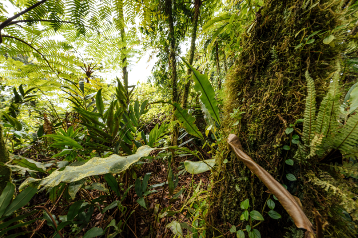

For much of my life, I have worked at the intersection of human and environmental health. For three generations, my family has been dedicated to healthcare, with a constant focus on improving people’s well-being through science. I grew up surrounded by conversations about health, how the body functions, how to enhance quality of life, how science can help new life begin.
At the same time, I was fortunate to spend my childhood in nature, from the Italian seaside to the Swiss mountain tops. Those early days by the sea and in the mountains left an imprint that shaped me. I have never lived far from nature, and so I cannot imagine myself as a city girl. What I felt then was how nature awakens us—how, in nature, we feel more alive, more curious, more connected to the world around us, to the ties that link us to other living beings, and to the cycle of life and death—and that this, too, is part of being healthy.
We feel better in nature because we belong to it.
Over the years, I came to understand that human health and nature’s health are not separate. They are two sides of the same coin. And as science and technology continue to advance, our progress on health has expanded in remarkable ways, yet we sometimes forget that it begins with the world around us. In our search for cures, we sometimes overlook the most powerful one of all: nature.
The healing power of nature
Nature itself has long been one of our greatest sources of healing. Many of our most effective medicines, including treatments for cancer and pain, originate from compounds found in wild plants and marine organisms. The bark of the willow tree gave us the foundation for aspirin, now used around the world to ease pain and reduce inflammation. From the foxglove plant came digitalis, a medicine that has saved countless lives by treating heart conditions. The rosy periwinkle, a small flower from Madagascar, led to breakthrough cancer treatments. And the sweet wormwood plant gave us artemisinin, a powerful cure for malaria. These are just a few reminders that protecting biodiversity is not only about saving species—it is also about safeguarding nature’s pharmacy, a living source of cures that has already transformed human health.
One ecosystem, one health
Science increasingly confirms what many of us have long felt: that our health depends on the health of the natural world. The concept of One Health, recognized by the World Health Organization, captures this connection. It affirms that the well-being of people, animals, and ecosystems is inseparable. It is one living system, constantly in balance.

NATURE'S PEACE: Dona Bertarelli believes that the health of humans and the health of nature are intertwined. "Even brief moments in nature, a walk in a park, the sound of birds, the sight of water, can already ease stress, steady the mind, and sharpen our attention," she says. Photo courtesy of Dona Bertarelli.
When we lose biodiversity, we lose more than the extraordinary species that share our planet. We lose stability in the systems that feed, protect, and heal us. The plankton drifting in the ocean produces much of the oxygen we breathe and supports entire food webs. The microbial life in forests and soils filters the water we drink and enriches the crops that nourish us. Each loss of biodiversity weakens this web of life, and with it, our own resilience.
And as we lose those benefits, we also create new risks. When marine ecosystems are degraded, toxins and microplastics make their way into the food we eat and the water we drink. When air pollution worsens, rates of heart and respiratory disease rise. These are not isolated environmental problems, they are symptoms of the same imbalance.
Reconnecting for well-being
Nature’s ability to sustain us is not only ecological. It is deeply personal. More and more studies show that spending time in natural environments reduces stress, lowers blood pressure, and strengthens the immune system. A large study in the United Kingdom found that those who spent at least two hours a week outdoors were 59 percent more likely to report good health and 23 percent more likely to report high well-being, regardless of age, income, or location. Other research shows that even brief moments in nature, a walk in a park, the sound of birds, the sight of water, can already ease stress, steady the mind, and sharpen our attention.
These are not luxuries or coincidences. They are reminders of how closely our bodies and minds are tuned to the natural rhythms around us. For millions of years, human beings evolved in connection with the natural world. We feel better in nature because we belong to it.
When we create sanctuaries for nature, we also create sanctuaries for ourselves.
This connection between nature and well-being is especially powerful, and increasingly needed, for young people. Yet, one long-term study in the United States found that between 1981 and 2003, children’s time spent in outdoor activities declined by roughly half. Time spent outdoors builds confidence, curiosity, and empathy, qualities that no classroom alone can teach. Through my program Sow My Dream, which encourages schools to bring learning outside, I have seen how nature can awaken something essential in children: a sense of wonder and belonging, together with critical thinking and passion that nurtures mind, body, and heart. A passion they may carry with them throughout their lives, whatever paths they choose.
Our common ground
Yet in our increasingly urban and digital world, nature has become something we visit rather than something we live within. Rebuilding that connection strengthens not only our health, but our communities. Green and blue spaces bring people together, restore our spirits, and foster a sense of belonging and purpose. When people have access to nature, they are more likely to be active, to engage with others, and to care for the places they share. Whether in schools, neighborhoods, or workplaces, reconnecting with nature as a society shows that well-being is not just personal, it is shared.
Our parks, rivers, forests, and the vast ocean carry the truth that what sustains one community sustains us all. This is why caring for these shared spaces is not only an environmental duty, but an act of mutual care. This is the idea behind the 30x30 global goal, adopted under the Convention on Biological Diversity, to protect at least 30 percent of the planet’s land and ocean by 2030.
The remedy around us
When we create sanctuaries for nature, we also create sanctuaries for ourselves, places where life can recover, harmony can return, and future generations can thrive. Protecting nature is not about keeping people out; it is about giving life room to grow, so that humanity, too, can flourish.
Our well-being rises and falls with the health of the planet. Every action we take to care for nature—protecting the land and the ocean, preserving biodiversity, and making space for the wild—is an investment in a healthier, more resilient future.
The more we care for nature, the more it gives back to us.
The remedy we have needed all along is all around us. We just need to embrace it. 
Lead image: courtesy of Dona Bertarelli.**